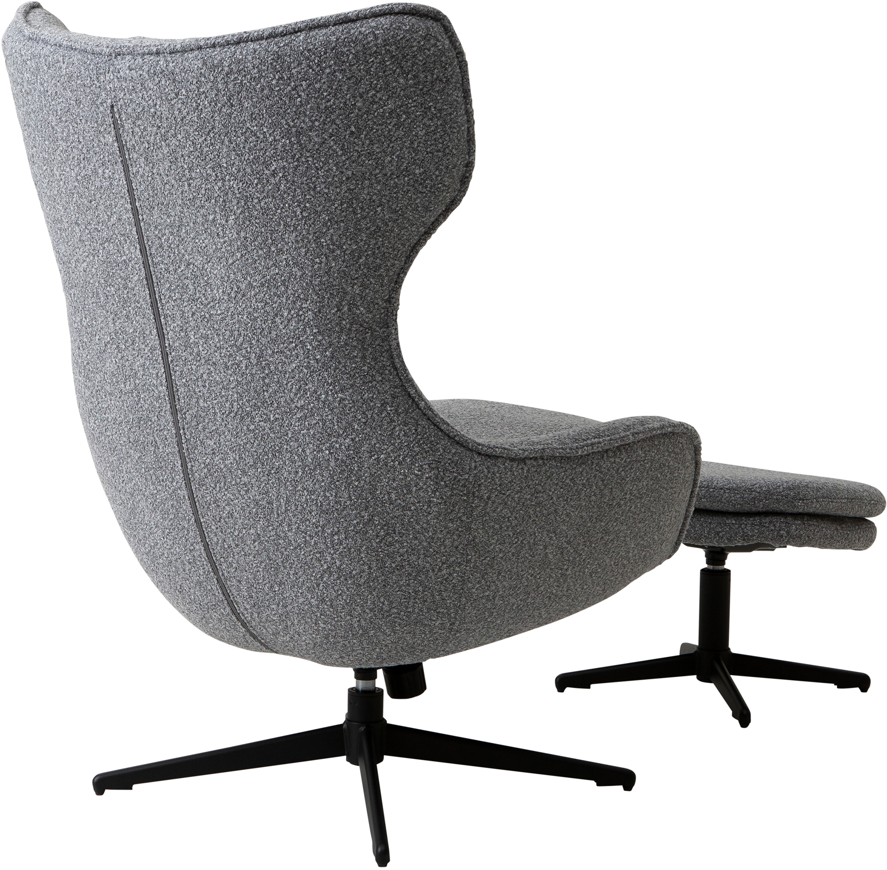
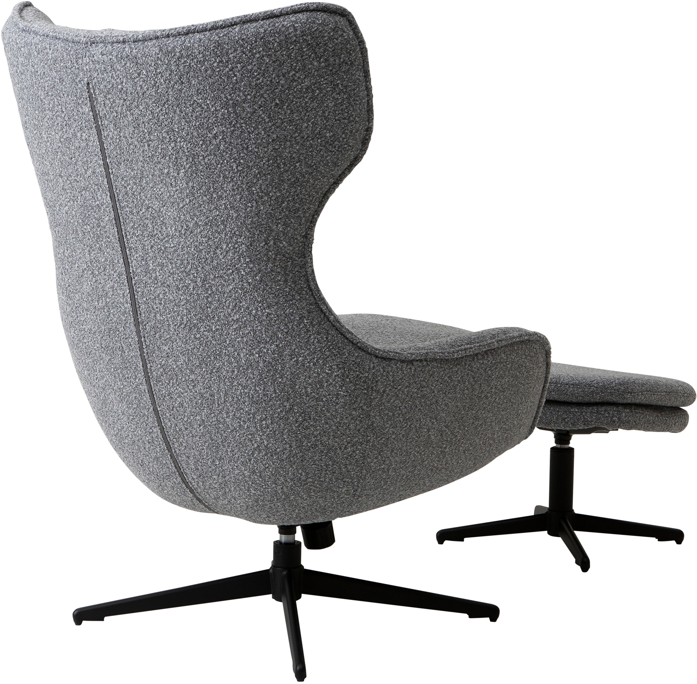
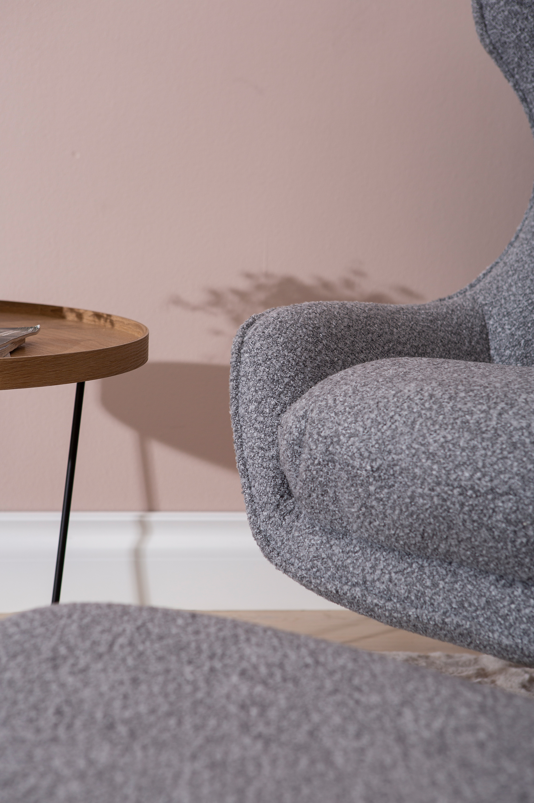
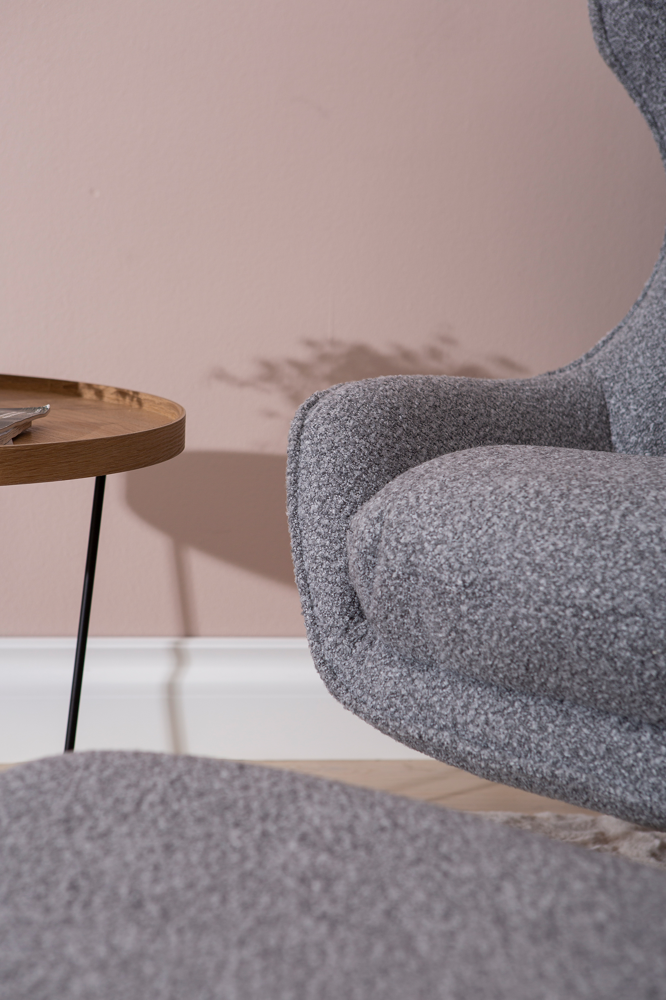
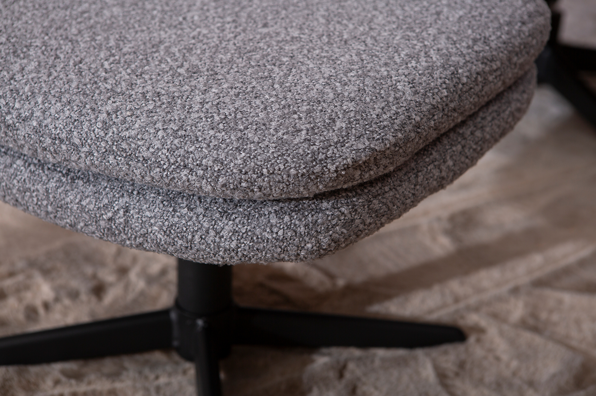
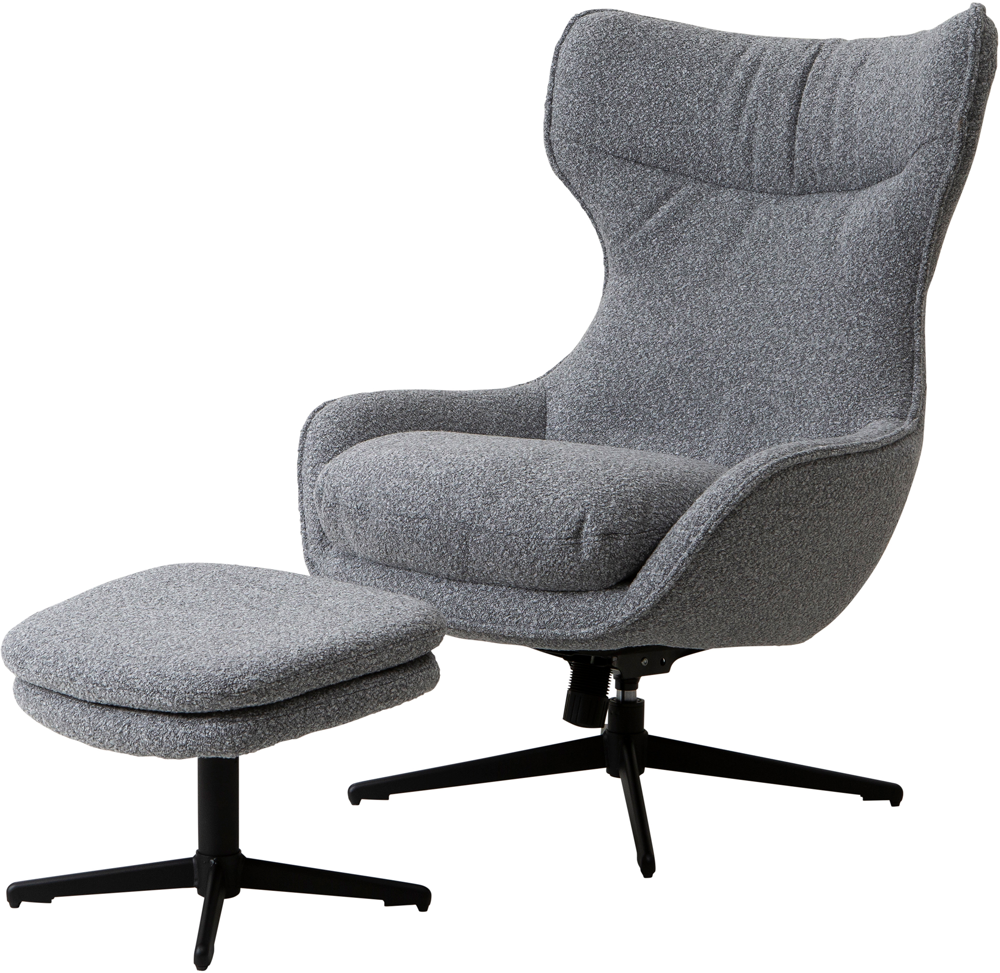
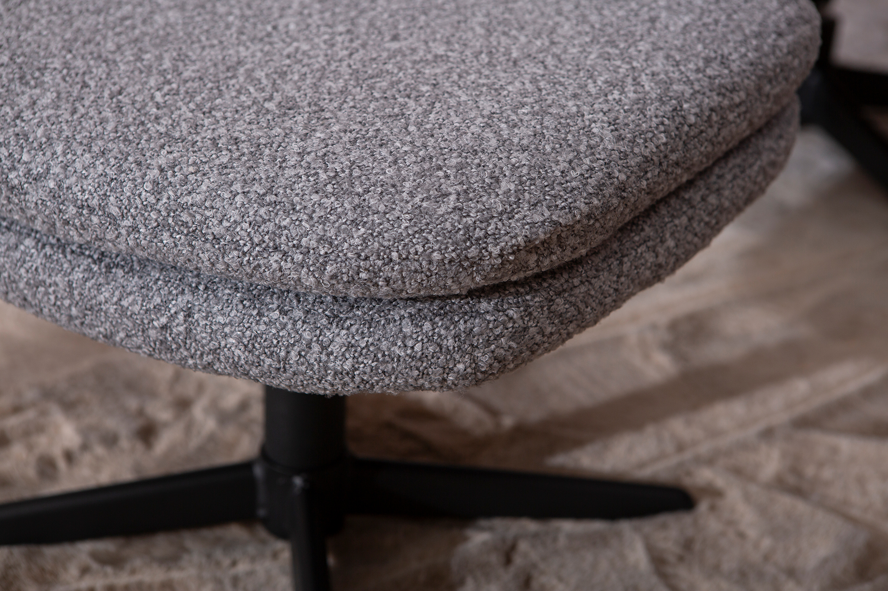
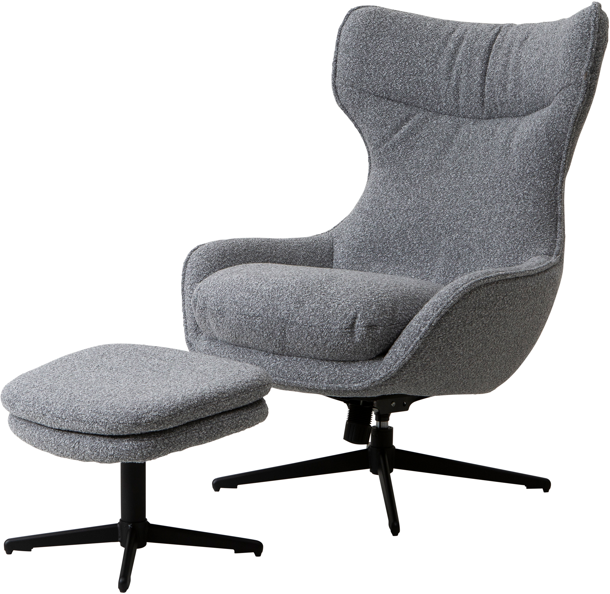

Breeze TV chair with ottoman, gray fabric / black leg
198260
 

 

 



Description
The Breeze TV chair with ottoman features soft gray fabric upholstery complemented by sturdy black legs, making it an elegant addition to any living or media room. Designed for ergonomic comfort, the high backrest supports long sessions of relaxation or screen time. The compact ottoman completes the set, offering versatile support for your feet or additional seating. Crafted with premium materials and showcasing a timeless design, this combination embodies comfort and style, perfectly suited to the refined tastes within the NEST & LIVING collection.
Technical specifications
| Color | Gray |
|---|---|
| Leg color | Black |
| Included pieces | TV chair and ottoman |
| Design tier | Available in Gold, Silver, and Bronze tiers |